Wardrobe Packs
What each pack contains, on the proctor's man and woman: the Supporter Pack's gold set beside the tweed jacket, the Style Pack as one outfit, eight flag badges, and for each country two outfit options to choose between. Pick one option per country; only the picks get fitted and checked.
The finished items are spliced into the committed proctor_wardrobe.glb: all 69 existing meshes are byte-for-byte unchanged, and every check passes on both bodies in all three builds. Wardrobe report: Wardrobe; pipeline: Proctor Character.
finished pack items: gold badge, gold glasses, gold watch; slate trousers and polished shoes.
enamel flag badges, at most three colours each, inside the pin's 34 mm disc.
country outfits (top, trousers, shoes), two per country: pick one each.
heaviest dressed man / woman, in triangles: unchanged, as no new part is heavier than its slot's heaviest.
The gold set, with the tweed jacket
Tweed jacket, the new Supporter Badge, gold-rimmed glasses and a gold watch (with formal trousers and loafers), slim, average and heavy. The three gold pieces share one gold and one pale gold, and the badge's dark gold field and the watch's dark dial echo the tweed's browns.

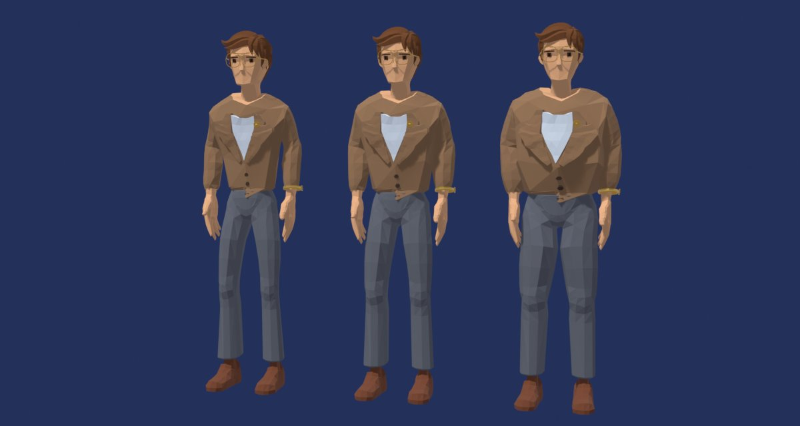

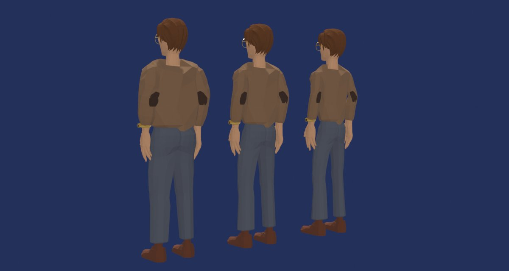

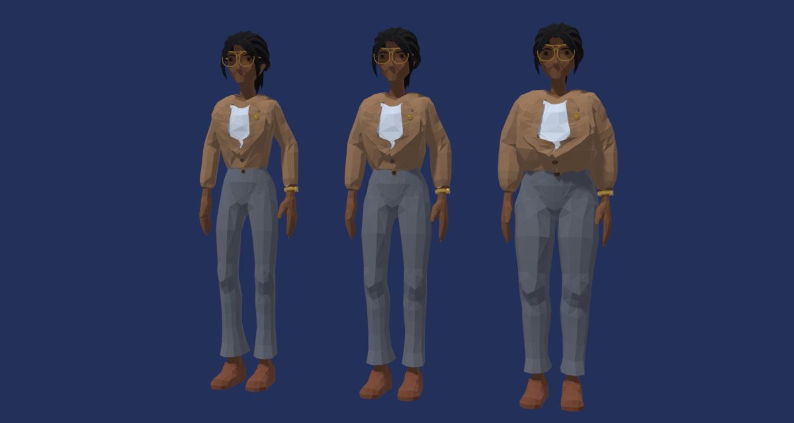


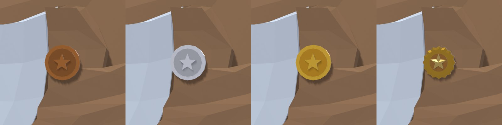

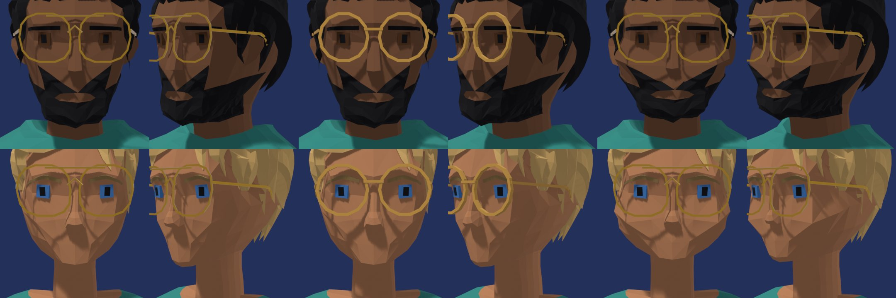

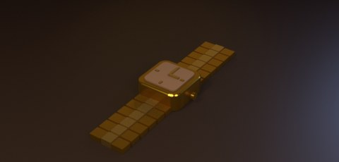

| Item | Parts | Triangles | Main · Trim · Detail |
|---|---|---|---|
Supporter Badge (new look)badge_supporter | Badge_Supporter | 346 (pin 156, heaviest crest 364) | #E0AE3A#8A5A16#F3D27A polished gold rim and star (Main, Detail); dark gold enamel field (Trim) |
Gold-Rimmed Glassesglasses_gold | ward_glasses_gold_m / _f | 592 / 592 (round 676 / 680) | #E0AE3A#E0AE3A#F3D27A all gold wire |
Gold Watchwatch_gold | ward_watch_gold_m / _f | 192 / 192 (watch 208) | #E0AE3A#2B211A#F3D27A gold case and outer bracelet rows (Main), dark dial (Trim), pale gold centre row, hands and indices (Detail) |
The slate outfit
The existing Slate Shirt and Enamel Badge with the two new pieces: pressed slate trousers a shade deeper than the shirt, and polished black derbies with a leather sole.

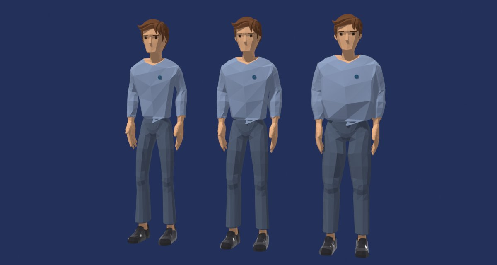

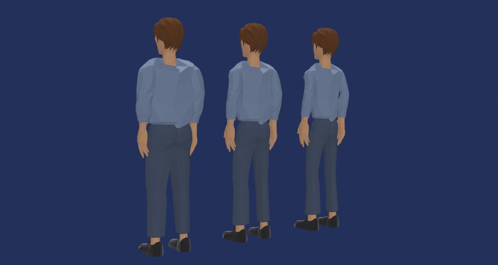


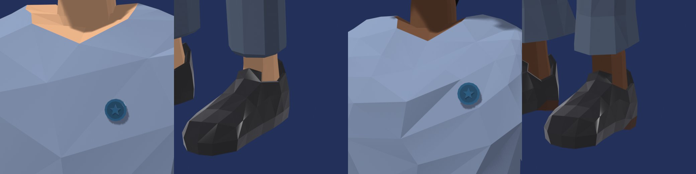

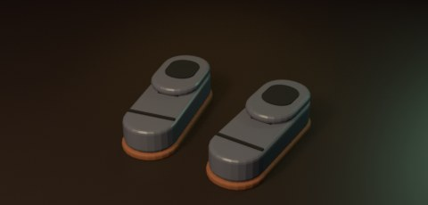
| Item | Parts | Triangles | Main · Trim · Detail |
|---|---|---|---|
Slate Shirt (existing)shirt_slate | ward_top_longsleeve_* | 695 (unchanged) | #8091AD existing coin item |
Slate Trouserstrousers_slate | legs_*_formal, tinted | 734 / 696 (unchanged parts) | #4F5B6E pressed suit cut, a shade deeper than the shirt (Legwear) |
Polished Dress Shoesshoes_polished | ward_shoes_polished_m / _f | 552 / 552 (sneakers 552) | #17171A#4A2C1C#17171A black derby (Main), leather sole (Trim) |
Enamel Badge (existing)badge_enamel | Badge_Pin | 156 (unchanged) | #2E6B94 existing coin item |
Flag badges
Enamel lapel pins: a plate in one colour with raised inlays in the other two, flat-shaded, sized so each flag keeps its official proportions inside the 34 mm pin disc. Each needs at most the three colour roles.

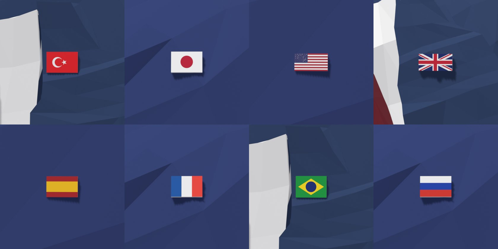

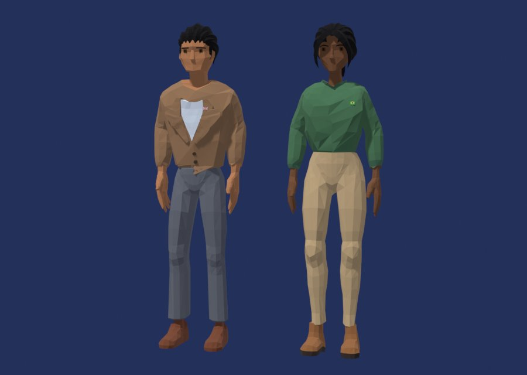
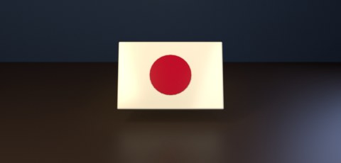
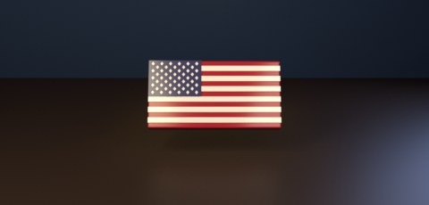
| Badge | Ratio | mm | Triangles | Main · Trim · Detail |
|---|---|---|---|---|
Turkeybadge_flag_tr | 2:3 | 27.5 × 18.3 | 152 | #E30A17#F5F5F2#F5F5F2 red field (Main); white crescent and star (Trim, Detail). Turkish Flag Law geometry: crescent circles 1/2 and 2/5 of the height, offset 1/16; the star (1/4 of the height across) with one point to the hoist |
Japanbadge_flag_jp | 2:3 | 27.5 × 18.3 | 94 | #F5F5F2#BC002D#BC002D white field (Main); red disc 3/5 of the height, centred (Trim, Detail) |
United Statesbadge_flag_us | 10:19 | 29.2 × 15.4 | 182 | #B22234#F5F5F2#3C3B6E red (Main); 6 white stripes and 50 stars as small diamonds in the official staggered 6/5 rows (Trim); blue canton 7/13 deep, 0.76 of the height wide (Detail) |
United Kingdombadge_flag_uk | 1:2 | 29.5 × 14.8 | 158 | #012169#F5F5F2#C8102E blue (Main); white saltire and cross (Trim); red counterchanged saltire, broad white uppermost on the hoist side, and red cross (Detail), on the official 60 × 30 grid |
Spainbadge_flag_es | 2:3 | 27.5 × 18.3 | 22 | #AA151B#F1BF00#F1BF00 red (Main); yellow band, half the height (Trim, Detail): the civil flag, no arms |
Francebadge_flag_fr | 2:3 | 27.5 × 18.3 | 32 | #0055A4#F5F5F2#EF4135 blue hoist third (Main); white (Trim); red fly third (Detail) |
Brazilbadge_flag_br | 7:10 | 27.0 × 18.9 | 92 | #009C3B#FFDF00#002776 green (Main); yellow rhombus, corners 1.7 modules from the edges (Trim); blue disc 3.5 modules in radius (Detail); the band and stars dropped, as agreed |
Russiabadge_flag_ru | 2:3 | 27.5 × 18.3 | 32 | #F5F5F2#0039A6#D52B1E white top (Main); blue middle (Trim); red bottom (Detail) |
Two outfits per country
Each pack is a matching top, trousers and shoes plus the flag badge. These are concepts: each top is shown on the nearest existing cut in its own colours, with its pattern painted onto the cut's faces (a kilim band, a Fair Isle yoke, quilting lines), so patterns read coarser than the finished knit or print will. Trousers and shoes reuse existing shapes in new colours where that is honest. The store tiles here are placeholders. Every outfit avoids costume, uniform and religious dress.
Turkey badge_flag_tr
Kilim


A navy knit cardigan with a kilim-motif chest band (terracotta and ivory) over an ivory shirt, charcoal trousers and tan loafers: Anatolian kilim geometry is a staple of contemporary Turkish design.
top_tr_kilim#1F2A44#F1EBDD#B5523B concept on the cardigan's cut, with its pattern painted on (kilim)trousers_tr_kilim#3A3D44 the suit trouser cut, recolouredshoes_tr_kilim#8A5A32#2A1B12 the loafer, recoloured
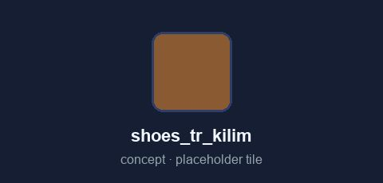
Aegean


An Aegean linen shirt in white with turquoise collar and buttons, stone trousers, white canvas shoes: summer office wear from Izmir to Bodrum, in the colour named after Turkey.
top_tr_aegean#F4F2EA#2A9DA0#2A9DA0 concept on the polo's cuttrousers_tr_aegean#D6CBB0 the straight (chino) cut, recolouredshoes_tr_aegean#F2F2F0#2A9DA0 the sneaker, recoloured
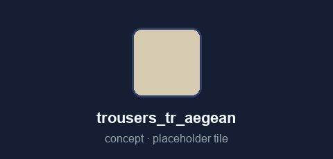
Japan badge_flag_jp
Coolbiz


Cool Biz: a crisp short-sleeve white business shirt with no tie, navy trousers, black shoes, the summer office dress code every Japanese workplace knows.
top_jp_coolbiz#F5F6F8#F5F6F8#B9BEC6 concept on the polo's cuttrousers_jp_coolbiz#232B3D the suit trouser cut, recolouredshoes_jp_coolbiz#141416#2A1B12 the new derby, recoloured
Indigo


An aizome indigo work jacket with sashiko-stitched patches over a white tee, raw selvedge denim and white leather sneakers: Japanese indigo and denim craft.
top_jp_indigo#27375E#F2F2F0#3E5487 concept on the tweed jacket's cut, with its pattern painted on (sashiko)trousers_jp_indigo#1F2B45 the jeans cut, recolouredshoes_jp_indigo#F4F4F2#D8D4C8 the sneaker, recoloured
United States badge_flag_us
Varsity


A navy varsity jacket with cream sleeves and striped rib, over a white tee, mid-wash jeans and court sneakers: American campus wear, worn as a grown-up's casual jacket.
top_us_varsity#1E2A4A#EDE6D3#EDE6D3 concept on the cardigan's cut, with its pattern painted on (varsity)trousers_us_varsity#4B6B9B the jeans cut, recolouredshoes_us_varsity#F2F2F0#1E2A4A the sneaker, recoloured
Oxford


A blue oxford button-down, khaki chinos and burgundy penny loafers: the Ivy smart-casual look America made its own.
top_us_oxford#A9C4E2#93B1D3#A9C4E2 concept on the shirt & tie's cut (the tie in the shirt's colour reads as a placket)trousers_us_oxford#C3A97A the straight (chino) cut, recolouredshoes_us_oxford#5A2A1E#2A1B12 the loafer, recoloured
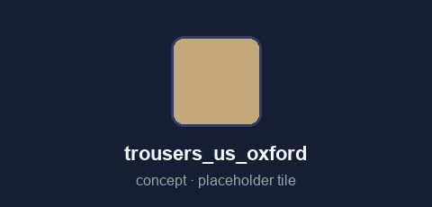
United Kingdom badge_flag_uk
Waxed


An olive waxed-cotton jacket with a brown corduroy collar over a check shirt, navy cords and brown Chelsea boots: British country wear worn in town.
top_uk_waxed#4A4F32#E6DFC8#5A3A22 concept on the cardigan's cut, with its pattern painted on (cord_collar)trousers_uk_waxed#2E3442 the suit trouser cut, recolouredshoes_uk_waxed#4E3220#1E1712 the boot, recoloured
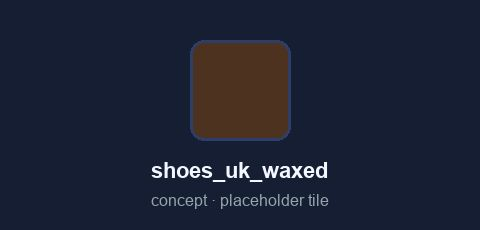
Fairisle


An oatmeal crew-neck with a Fair Isle yoke (navy and rust), grey flannel trousers and tan brogues: Shetland knitwear and British tailoring.
top_uk_fairisle#D9CFB8#2A3550#A4502E concept on the sweater's cut, with its pattern painted on (fairisle)trousers_uk_fairisle#7A7D82 the suit trouser cut, recolouredshoes_uk_fairisle#6E4326#3A2418 the new derby, recoloured
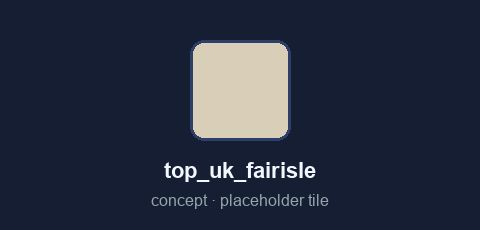
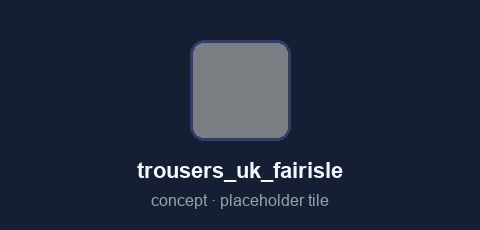
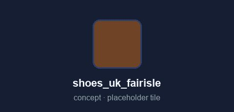
Spain badge_flag_es
Alpargata


A sand linen shirt, navy trousers and navy canvas espadrilles on jute soles: the alpargata is a Spanish original and still everyday summer wear.
top_es_alpargata#E9DFC6#DCCFB0#E9DFC6 concept on the shirt & tie's cut (the tie in the shirt's colour reads as a placket)trousers_es_alpargata#25304A the straight (chino) cut, recolouredshoes_es_alpargata#2A3550#C9A877 the loafer, recoloured
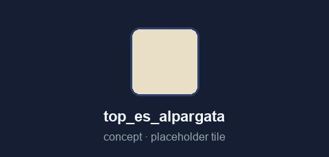
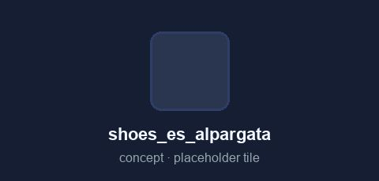
Jersey


A terracotta knit polo with a navy jumper knotted over the shoulders, ecru trousers and suede loafers: the classic Spanish smart-casual look.
top_es_jersey#B5523B#B5523B#1F2A44 concept on the polo's cut, with its pattern painted on (shoulders)trousers_es_jersey#ECE6D6 the straight (chino) cut, recolouredshoes_es_jersey#A0784E#3A2418 the loafer, recoloured
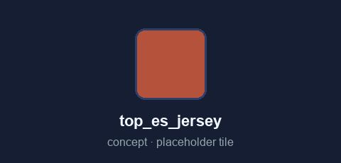
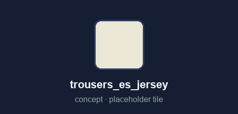
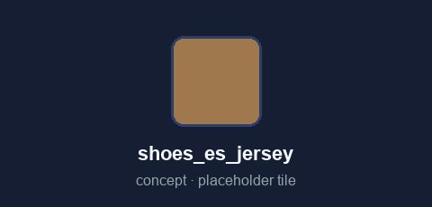
France badge_flag_fr
Travail


A bleu de travail chore jacket with patch pockets over an ecru tee, ecru trousers and white leather sneakers: the French work jacket, now an everyday staple.
top_fr_travail#2D4F8E#F0EADB#2D4F8E concept on the tweed jacket's cuttrousers_fr_travail#E6DEC8 the straight (chino) cut, recolouredshoes_fr_travail#F4F2EC#2D4F8E the sneaker, recoloured
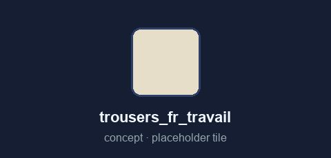
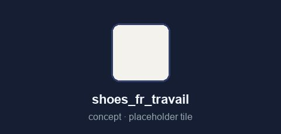
Tennis


A white pique tennis polo with blue-white-red collar tipping, navy trousers and white court shoes: the tennis polo was born in France.
top_fr_tennis#F7F7F4#1F2A55#D2343C concept on the polo's cut, with its pattern painted on (tipping)trousers_fr_tennis#1F2A44 the suit trouser cut, recolouredshoes_fr_tennis#F4F4F2#1F2A55 the sneaker, recoloured
Brazil badge_flag_br
Carioca


A light camp-collar shirt with a green and ochre tropical-modernist print (after Burle Marx), linen trousers, tan loafers: Rio's relaxed office wear.
top_br_carioca#F2EFE6#2E7D4F#D9A53A concept on the polo's cut, with its pattern painted on (print)trousers_br_carioca#E8E2D2 the straight (chino) cut, recolouredshoes_br_carioca#8A5A32#2A1B12 the loafer, recoloured
Calcadao


A white knit with the black Copacabana wave band (Burle Marx's promenade pavement), khaki trousers and navy canvas sneakers: a Rio landmark as a knit pattern.
top_br_calcadao#F2F0EA#1C1C20#1C1C20 concept on the sweater's cut, with its pattern painted on (wave)trousers_br_calcadao#C9BB98 the straight (chino) cut, recolouredshoes_br_calcadao#2A3550#F2F2F0 the sneaker, recoloured
Russia badge_flag_ru
Rollneck


A charcoal merino roll-neck, black wool trousers and lined black leather boots: the Russian winter office uniform.
top_ru_rollneck#3A3D44#33363C#33363C concept on the sweater's cut, with its pattern painted on (rollneck)trousers_ru_rollneck#1E1F23 the suit trouser cut, recolouredshoes_ru_rollneck#1A1A1C#2B201A the boot, recoloured
Puffer


A navy quilted down jacket with a hood, dark jeans and felt-lined grey winter boots: the everyday winter commute.
top_ru_puffer#1E2A44#3A4C78#3A4C78 concept on the hoodie's cut, with its pattern painted on (quilt)trousers_ru_puffer#2A344A the jeans cut, recolouredshoes_ru_puffer#4A4A4E#1E1E20 the boot, recoloured
Checks and what Unity needs
| Check | New parts | Result |
|---|---|---|
| Identity (splice) | all 69 committed meshes, nodes, materials, binary | byte-identical |
| Glasses: nose, inside a face, temple arms, thin hair | ward_glasses_gold_*, 4 faces, every hair | pass (nose 3.0 mm, ear rest 6.1 / 5.1 mm) |
| Watch sinking into the wrist (30 poses) | ward_watch_gold_* | pass (0) |
| Feet: both sides, crossing edges, stretch | ward_shoes_polished_* | pass (stretch 1.16 / 1.20) |
| Seams (cracks, gaps), all builds | glasses, watch, shoes | pass |
| Build shapes, waistbands, openings, see-through, poke | unchanged tops and trousers | pass |
| Badges (new): face under cloth, hover, 20 tops × 3 builds | 18 badge meshes, old and new | pass (hover ≤ 0.5 mm) |
- Finish. Read
wardrobe.items.<id>.finish(alsowardrobe.finishes): Metallic and Smoothness per role. Gold roles are metallic 1.0, smoothness 0.78; the shoes are smoothness 0.85; flags are enamel (metallic 0, smoothness 0.6). The GLB's gold materials are namedWard_Main_GoldandWard_Detail_Gold;CosmeticAppearance.Rolealready maps them to Main and Detail. - Glint.
badge_supporterhas"glint": "once": one highlight sweep the first time it is shown. - Badge mesh.
badge_supporternow usesBadge_Supporter; flags useBadge_Flag_<cc>. All are inproctor_wardrobe.glb, the badge library the figure uses.Wardrobe3Testsstill looks badge meshes up in the oldwardrobe.glband needs pointing atproctor_wardrobe.glb. - Badge offsets. No per-badge offsets: every new badge uses the shared badge poses. One new per-top override:
badge_rule.m.tops.top_m_issuedside 0.090 (was the body's 0.075), because the heavy build's chest rose into every badge there, today's pin included. Rebuild the supervisor prefab so the baked poses pick it up. - Colours. Add the triples above to
CosmeticAppearance.ColoursOf; trousers_slate is Legwear#4F5B6E.